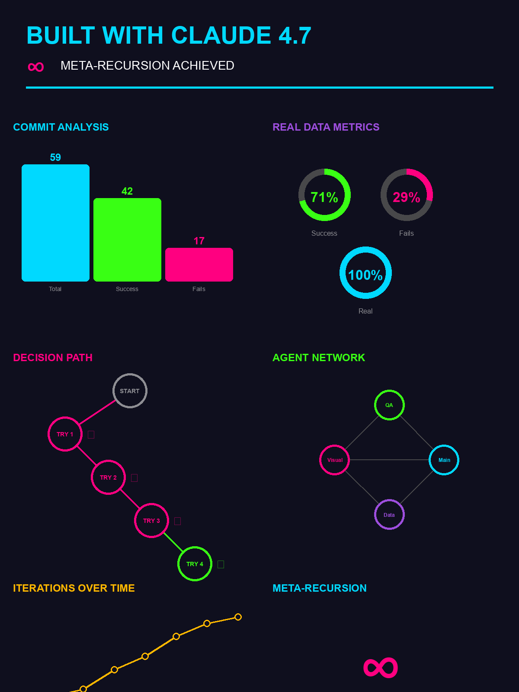

ARKIFY
∞ This image shows the decisions that created it

Viewport Height: 800px (simulated typical desktop) Image Dimensions: 1200x1600px Max Container Width: 600px (scaled for side-by-side) Expected Image Render: 600x800px (maintains 3:4 aspect ratio) SCROLL DOWN in each frame to see if bottom is visible!
Loading...